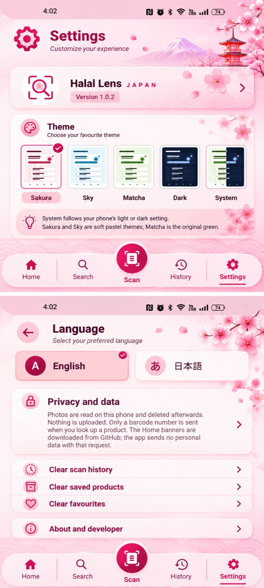
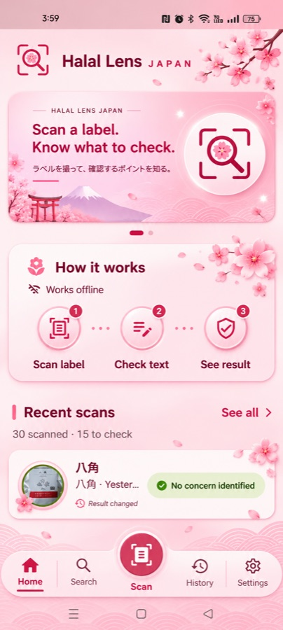
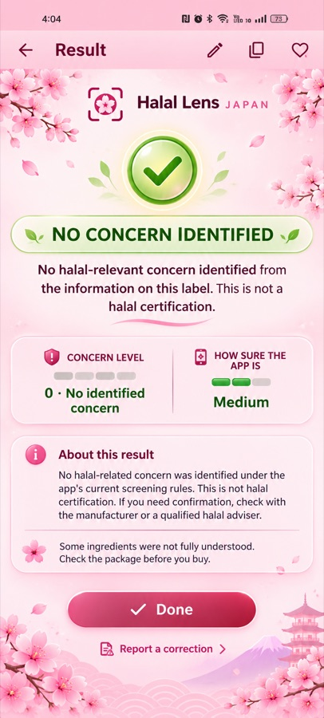

TABEWISE タベワイズ
Scan a label. Know what to check.
ラベルを撮って、確認するポイントを知る。
Scan an ingredient label or look up a barcode. TABEWISE explains food ingredients and highlights items that may need a closer look.



Everyday choices in Japan, with less guesswork.
Ingredient lists in Japanese are hard to read and often leave out where an ingredient comes from. TABEWISE helps you understand them and decide what to check.
- Reads labels with the camera, or looks up a barcode
- Checks each ingredient against a bundled dictionary
- Explains why an ingredient was flagged
- Never treats a product name as ingredient evidence
Five possible outcomes, each explained
A calm, sakura-soft design
Scan from the home screen, read a clear result, and pick your theme and language in Settings.
Home
Result, with the “not a halal certification” reminder
Settings: Sakura, Sky, Matcha, Dark and System themes; English and 日本語
Careful by design
Private by default
Text recognition runs on your phone. Photos are not uploaded, and only a barcode number is sent when you look one up.
Works offline
The ingredient dictionary is bundled in the app, so label checks need no connection.
Honest confidence
A barcode-database result never gets the top confidence level.
“It is a screening aid. It is not a halal certification and not a religious ruling.”From TABEWISE
Your smart companion at the shelf
Label scanning
Point the camera at a Japanese ingredient list and read it on the spot.
Barcode lookup
Find a product in Open Food Facts using its barcode.
Ingredient dictionary
500 catalogue records, with research and review status clearly identified.
Two languages
Use the app in English or in Japanese.
Small, focused and transparent
The numbers below are the project's real current state, including what is still unfinished.
From label to answer in three steps
Scan or search
Photograph the ingredient label, or enter a barcode.
Match and explain
Each ingredient is checked against the bundled draft dictionary and explained.
Verify
Check the package and ask a qualified adviser when you need a ruling.
Important limits
- A screening aid only. It is not a halal certification or a religious ruling, and it cannot verify certificates.
- All 500 catalogue records remain draft entries. They have not been approved by a qualified religious adviser, and classifications can change.
- Labels and data are imperfect. Labels often omit where an ingredient comes from. Open Food Facts data can be incomplete or wrong, and text recognition can misread Japanese.
- When in doubt, check the package and ask a qualified adviser.